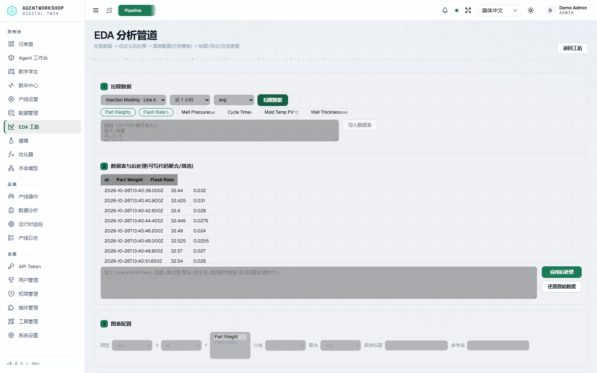
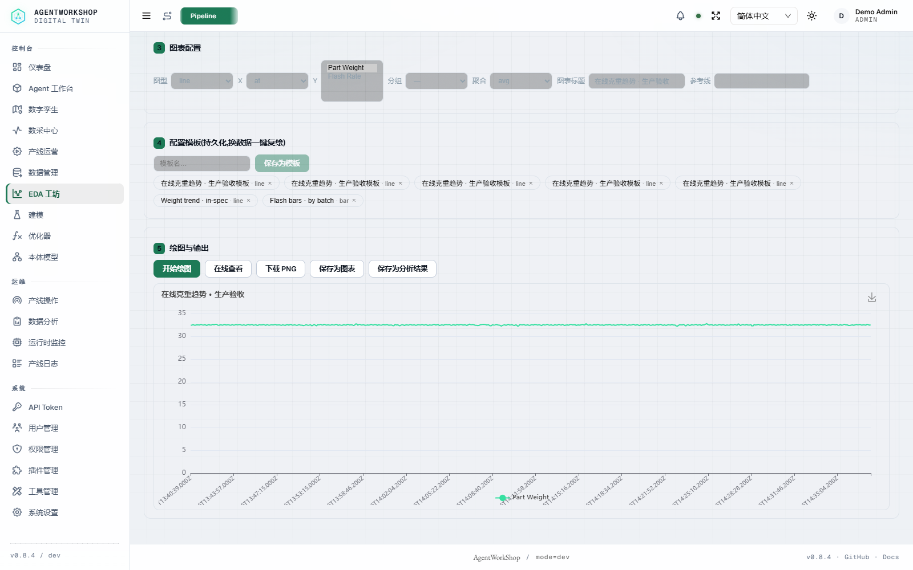
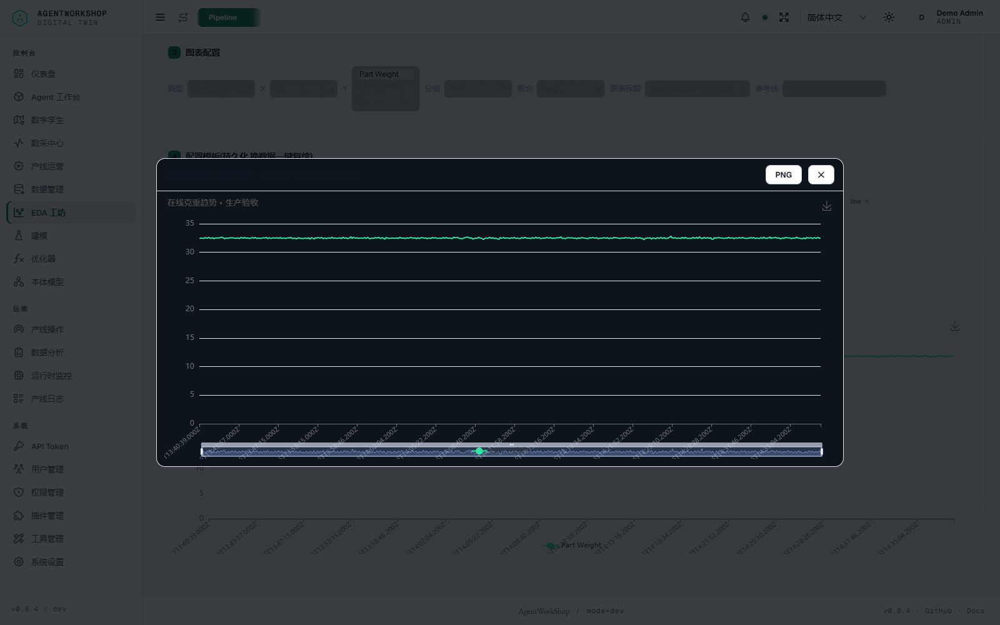
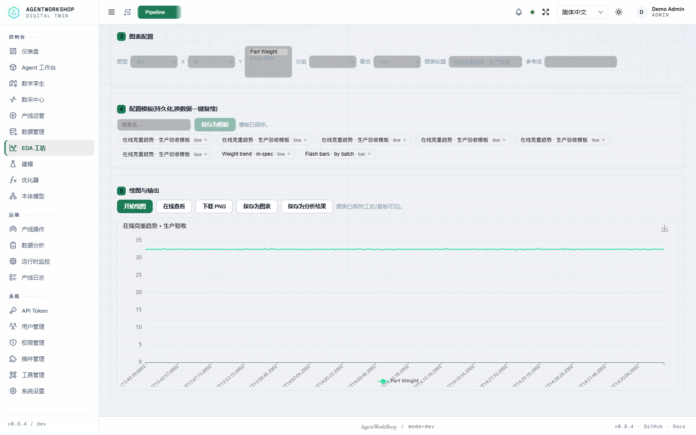
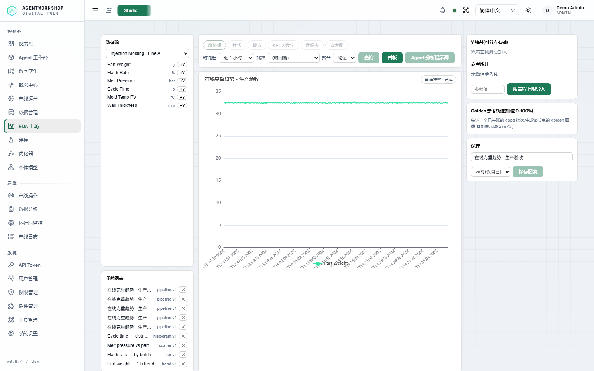
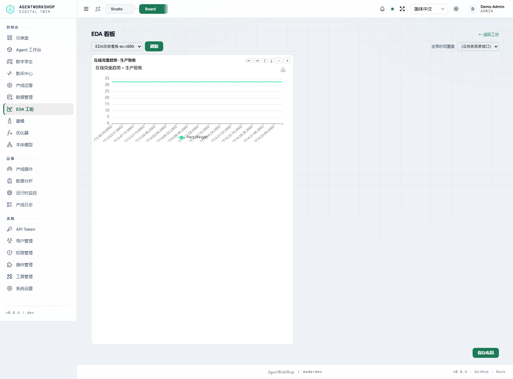
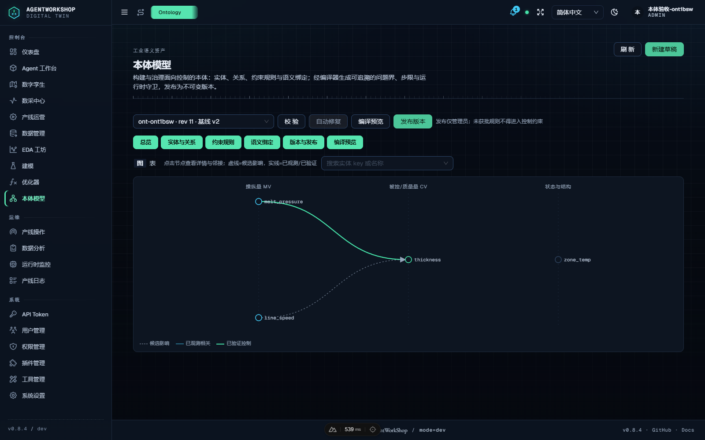
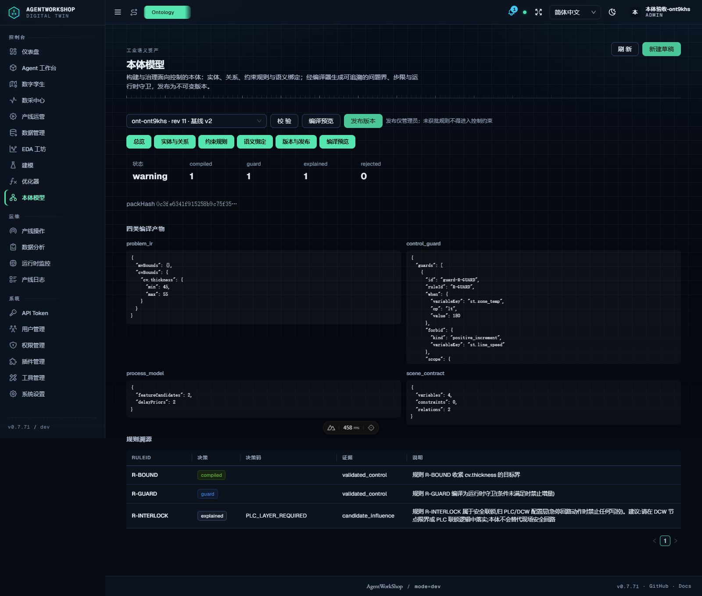
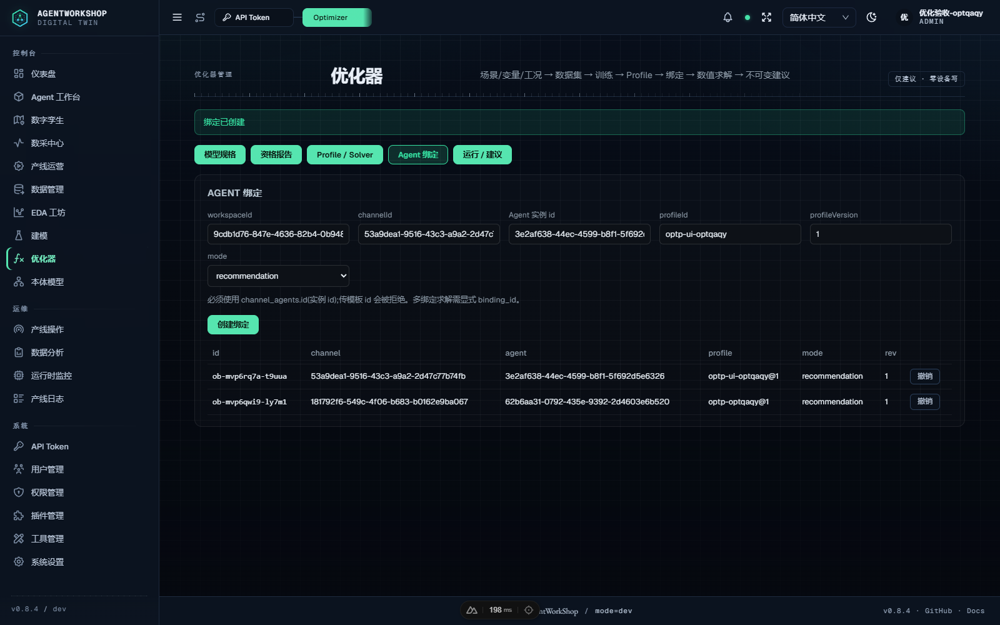
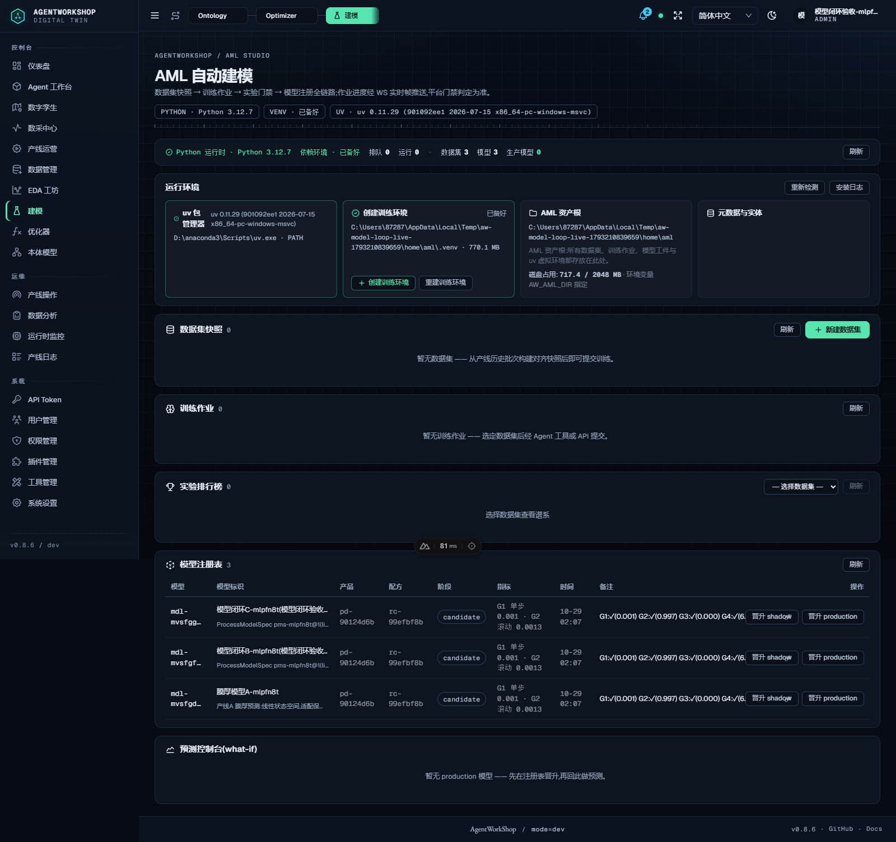

AgentWorkShop · Acceptance & Production Readiness
全功能验收与真实工业场景就绪评估
2026-10-26 · current main · isolated mock/PLC-simulator environment · screenshots from live UI, not mockups
功能验收 PASS
真实产线：有条件就绪
安全认证：未通过 / inconclusive
Bench attainment：RED
1. 验收矩阵
| 层 | 套件 | 结果 |
|---|---|---|
| T0 | lint / typecheck / docs / i18n / README | 全通过 · docs 91/91 · i18n 3149/3149 |
| T1 | 单元 / MCP / 插件 / SDK / Twin / Skills | 582/582 · 14/14 · 22/22 · PASS · 5/5 · 124 |
| T2 | 本体 L1–L7（真机） | 87/87（Chrome 六 tab + graph/table + 邻接） |
| T2 | 模型闭环 / 优化器 / 产线治理 | 54/54 · 104/104 · 44/44 |
| T3 | REST API live | 64/64 |
| EDA | pipeline E2E / live UI / Studio+Board | 24/24 · 10/10 · 4/4 |
2. EDA 本地实机演示（模拟产线）
在线拉数（真实 DAQ REST，模拟产线数据）→ 数据表 → 浏览器本地代码后处理 → 图表 → 在线查看器 → 模板持久化 → 保存图表/分析结果 → Studio/Board 快照回放。截图来自本地实例，不代表真实工厂运行。

在线拉数：选择产线与两个 DAQ 节点，宽表直接回落。

代码后处理 + 绘图：1735 行结果，line / x=at / y=Part Weight。

在线查看器：真实 ECharts canvas，滚轮/滑块缩放 + PNG。

图表保存回执：pipeline 图表落库。
分析结果保存回执：结果进入台账。

Studio 快照：同一 pipeline 图表可打开渲染（只读）。

Board 快照：同一图表进看板仍可渲染。
本轮修掉的 EDA 真实缺陷：在线查询点形状 `{at,v}` 与页面 `{x,y}` 不匹配；保存图表发送 `pipeline-line` 被服务端 400；Studio/Board 不识别 pipeline 快照；E2E 多选 Y 字段测试自身未触发 change；快照图表在 grid 容器里以 0 宽初始化；1735 桶刻度重叠。修复后 24/24 + 10/10 + 4/4（含无快照 rows 与 line_id 不一致必须 400 的负例）。
B4 边界：管道快照仅 private、最多 2000 行、必须带 line_id 且 datasource.line_id 一致；rows 为保存者客户端提供、不是服务端代理数据，读取仍走 chart owner 可见性。普通图表只存查询参数。
B4 边界：管道快照仅 private、最多 2000 行、必须带 line_id 且 datasource.line_id 一致；rows 为保存者客户端提供、不是服务端代理数据，读取仍走 chart owner 可见性。普通图表只存查询参数。
3. 系统设计强项
单咽喉 + 交集限界
参数基准 / 产品窗 / 配方窗 / 节点量程在统一写控入口取交集；拒绝会点名约束层。
fail-closed 治理链
绑定 → 二级认证 → 运行门 → HITL → 写控 → 回执/回读 → 审计；异常路径关闭而非放行。
作用域收敛
Agent 节点/配方绑定、Channel 绑线、工具注册表与角色面；跨线读取和未授权工具均被拒。
可追溯与闭环
ops/audit/recipe/analysis 台账、本体证据链、优化器/模型采纳与哈希锁定。

本体图：实体/关系/证据与草稿同源（L7 87/87）。

编译预览：四类产物 + Rule Trace。

优化器绑定面：profile / binding / solve / crosscheck。

模型闭环：训练 → 门禁 → 采纳 → 重绑（54/54）。
4. 真实工业加工场景：上线前一票否决项
| 项目 | 现状 | 判定 |
|---|---|---|
| 真实 PLC / 机床 / 传感器 | 本轮全部 Mock/PLC 模拟器；协议驱动已实现 | 需现场 FAT/SAT，不能用本轮替代 |
| 功能安全 | 平台是监督层，不是安全 PLC | 不能承担 SIL/ISO 13849 安全功能 |
| 信息安全 | Mimosa deep scan inconclusive；46 条静态提示（38 high） | 未通过安全认证；上线前整改+复扫 |
| HA / 容量 / SLO | 单实例 SQLite/TSDB；有备份/保留；无集群/故障切换/压测 | 需部署架构与容量验证 |
| Bench 保真度 | v2 写路径已迁移；四场景 attainment 红 | 不能作为生产性能/收益承诺 |
| 外部集成（IDD/RAG/MES） | 适配层存在；本轮外部后端未纳入 | 按现场接口逐项联调 |
5. 建议落地路径
- 只读影子期：真实产线只接 DAQ，验证采样/时区/批次归属/断链恢复，不写入。
- 单线人工写入试点：一条线、一个配方，
controlMode=manual+ HITL，逐笔核对回执/回读/回退。 - 安全与部署收口：SSRF/路径穿越整改、Mimosa 复扫、反代/备份恢复演练、容量与故障注入。
- FAT/SAT：按厂商协议做真机矩阵，记录时延/重连/量程/异常码，形成投产 SOP。
- 再评估优化收益：模拟器模型校准后再将 bench/ROI 纳入生产 KPI。
6. 一句话结论
功能通过、可试点；真实工业投产仍为“有条件就绪、未认证”。
补真机 FAT/SAT、安全整改/复扫、HA/容量验证，再进入生产。